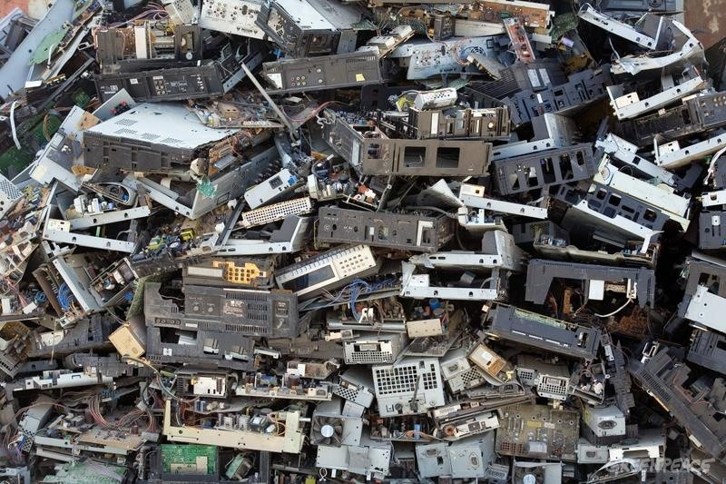

What is E-waste?
E-waste stands for electronic waste and is a growing problem in our technology savvy society. E-waste consists of all electronics that are no longer deemed useful. This can include batteries, televisions, computers, printers, phones, chargers, headphones, and more. However, E-waste goes beyond what is generally considered part of the “electronics world”. Many people don’t realize that e-waste can include microwaves, power tools, car batteries, hairdryers, and similar objects.
Click here for a list of common household "E-waste"
